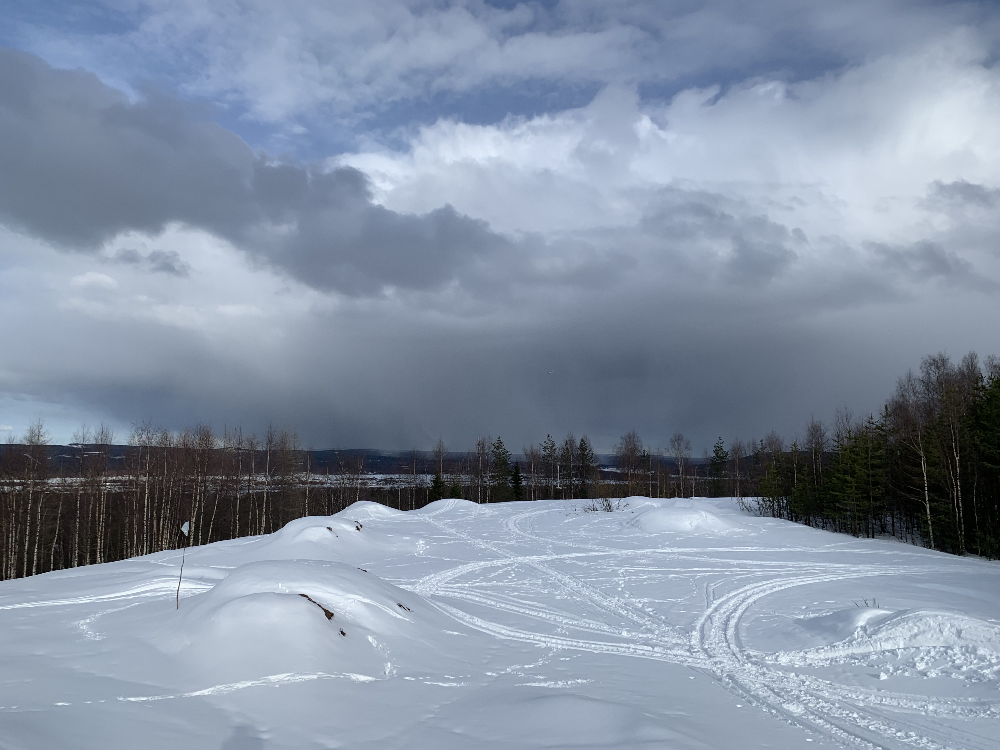
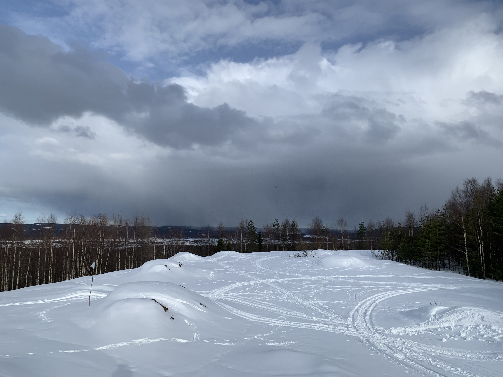

Einde Erasmus
Helaas is mijn Erasmus ten einde gekomen
June 4, 2022


Helaas is mijn Erasmus ten einde gekomen. Ik heb een ontzettend leuke tijd gehad in Rovaniemi, veel nieuwe mensen leren kennen, een wonder mooie natuur gezien en veel plezier gehad. Ik ben heel blij dat ik deze uitdaging ben aangegaan. Het was een echte meerwaarde om mij verder te ontwikkelen. Ik wil dan ook iedereen bedanken die het mogelijk voor mij heeft gemaakt om deze ervaring te beleven. Dit is ook tevens het einde van mijn blog. Ik hoop dat ik u veel leesplezier heb kunnen geven en dat u zo up-to-date was met mijn avontuur. Of achteraf een terugblik heeft op deze reis. Ik wil ook u bedanken beste lezer om samen met mij deze geweldige reis te beleven.
Trip naar Lofoten
Samen met de andere Erasmus studenten op kantoor hebben we een weekendje naar de Lofoten
gemaakt.
May 20, 2022


Samen met de andere Erasmus studenten op mijn stage: Cederic, Malte en Rasit hadden we besloten
om een weekendje naar Lofoten te gaan. Dit is een schiereiland in Noorwegen. Een kleine 11 uur
rijden. We hadden een leuke AirBnb gevonden en een auto gehuurd, klaar om te vertrekken.
Vrijdagnacht om 1 uur vertrokken we. Onderweg kwamen we veel wild op de baan tegen. Konijnen,
rendieren, vogels en zelfs een eland. Hiervoor moesten we telkens afremmen wat wel een beetje
vervelend was. Na een aantal stops kwamen we om 10 uur aan in Lofoten. Hier werden we begroet
door hoge besneeuwde bergen met daaronder helder blauwe meren.
Onze eerste stop was het Viking museum. In het eerste gedeelde was er een kortfilm en een aantal
viking voorwerpen zoals: zwaarden, messen en de klederdracht. Hierna hebben we een vikingshuis
bezocht. Dit was een replica van een huis dat op deze locatie was terug gevonden. Dit was
volledig ingericht. We konden zelfs ten strijden trekken want er lagen verschillende
gevechtsuitrustingen om te proberen. Daarna moesten we een kleine kilometer wandelen om de
vikingsboot te bewonderen. Deze was nog maar pas in het water gelaten na de winter. Hierdoor was
deze nog in opbouw en renovatie. In de zomer wordt er met deze boot ook echt op het meer
gevaren. Op de terug weg hebben we ons nog aan een potje bijlwerpen gewaagd. Het was niet zo
evident om de bijl ook daadwerkelijk in de roos te laten steken. Ook was er een smeed, maar deze
waren ze ook na de winterstop terug aan het opbouwen. Na de stop aan het museum zijn we verder
gereden naar Unstad beach. Dit is een favoriete surfplaats voor zowel de lokale inwoners als
toeristen. Helaas begon het te regenen.
Hierna was het tijd om naar onze Airbnb te gaan. Deze lag op een mooie locatie en was gezellig
en praktisch ingericht. Na in te huizen had ik het impulse idee om de berg die achter onze
verblijfplaats lag te beklimmen. Ondertussen was het ook gestopt met regenen. Hier was echter
geen wandelpad voorzien. Het was wandelen waar de meeste geschikte route lag. Maar eens boven op
300 meter was het zicht wel adembenemend. 's Avonds hadden we samen nog spaghetti gemaakt en een
film gekeken en zo zat onze eerste dag erop.
De volgende dag maakten we een road trip verder naar de onderkant van het schiereiland. Onze
eerste stop was Skagsanden beach, helaas was het mistig waardoor we niet veel van het strand
konden zien. Hierna reden we door naar Hamnøya. Dit is het oudste vissersdorpje van het eiland.
Helaas werd ik hier aangevallen door een broedende meeuw en werd mijn jas geraakt. Deze was dus
besmeurd met vogelpoep. Na deze te hebben afgeveegd reden gingen we verder naar de Reinebringen.
Dit is een berg van 600 m hoog die je makkelijker kan beklimmen. eerst hadden we onze lunch aan
de voet van de berg opgegeten voor we aan de tocht begonnen. Daarna was het een 1000 tal trappen
beklemmen, gevolgd door een smaller padje op de berg. Het uitzicht boven aan de berg was het
zeker waard. Hier kwamen met ons hoofd boven de wolken. Het was adembenemend. Hierna begonnen we
aan onze aftocht naar de auto en konden we terug naar de Airbnb rijden. Het was een vermoeiende
dag maar wel heel veel moois gezien. 's Avonds naar de zonsondergang gekeken en een pizza
gegeten.
Zondag was het alweer tijd om terug naar Rovaniemi te gaan. Eerst maakten we nog een tussenstop
bij Henningsvær. Hier ligt een voetbalveld op een klein schiereilandje. Hier werd een opname
gemaakt voor een promo filmpje van de UEFA Champions League finale van 2018. Hierna begon onze
11 uur durende rit terug. Het was een zeer mooi uitje met de collega's en we hebben ons goed
geamuseerd. En nemen mooie herinneringen mee Van het nog mooiere schiereiland.
Week 10 - 13
Afgelopen weken is er weinig speciaals gebeurt
Mei 19, 2022


De afgelopen weken waren rustige weken. Ik heb vooral aan mijn bachelorproef gewerkt. Mijn
buren in het appartement onder mij waar ik goed bevriend mee ben geraakt hebben Rovaniemi
verlaten. Daarom hadden we nog een laatste keer een drink georganiseerd en zijn we in de
nachtclub HalfMoon gaan feesten. Het was jammer dat ze al naar huis moesten. We hebben samen een
leuke tijd beleefd.
7 mei organiseerde Erasmus student network (ESN) de ESN goodbye party. Dit is het laatste
feestje dat ze organiseerde. Eerst hebben we een quiz gespeeld. Vervolgens was het tijd voor de
prijsuitreiking. Hier werden er prijzen uitgedeeld aan de studenten. Er waren verschillende
categorieën zoals: De beste student, het grootste feestbeest, … Daarna was het tijd voor het
feestje. Hier was ook een sauna en bubbelbad aanwezig. Een lokale student en lid van de
organisatie stelde voor om in de sauna te gaan en daarna in het meer te springen. Dit was zeer
verfrissend.
18 mei speelde Finland tegen Zweden voor de wereldbeker in ijshockey. Daarom trokken we naar
bull bar. Dit is een gezellig hamburgerrestaurant waar we de wedstrijd met zijn allen konden
volgen. En natuurlijk konden de kampvuren ook niet ontbreken.
Familie bezoek
Deze week was mijn familie op bezoek
Apr 26, 2022


Na een lange tijd kwam mijn familie mij deze week bezoeken. Hier heb ik hard naar uitgekeken.
Zaterdagavond ging ik hen ophalen aan de luchthaven. Hierna was het tijd om in te huizen in het
gehuurde appartement en een hapje te gaan eten.
Zondag zijn we een bezoekje gaan brengen aan mijn appartement en daarna hebben we Arktikum
museum bezocht. Na het museum te bezoeken hebben we nog een wandelingetje gemaakt langs de
rivier. Zo was hun eerste dag al om.
Op maandag hebben we Santa Claus Village bezocht. Helaas waren we net te laat om de Kerstman
te bezoeken. Daarom zijn we later in de week terug gegaan om hem toch nog een bezoekje te
brengen. 's Avonds zijn we Mexicaans gaan eten bij Amarillo. Omdat er die avond nog een kleine
kans was om het noorderlicht te zien hebben we het erop gewaagd. Maar helaas was het te bewolkt
en hebben het niet kunnen bewonderen.
Dinsdag zijn we naar Korouoma geweest. Dit is een kloof waarin een aantal beekjes van boven
naar beneden lopen. In de winter bevriezen deze en vormen ze prachtige watervallen. Dit zorgt
voor een adembenemende wandeling. Omdat het die avond niet bewolkt was, hebben we nog eens
geprobeerd om het noorderlicht te bekijken. Nu moet u weten dat er tegen het einde van mei tot
eind juni er rond de noordpoolcirkel een middernachtzon is. Dit betekent dat gedurende deze
maand de zon niet ondergaat. Hierdoor blijft er al in april een schemering aan de horizon staan.
waardoor de kans om het noorderlicht te zien verkleint. Dus ook die nacht hebben we het niet
kunnen aanschouwen.
Woensdag hebben we een bezoek gebracht aan mijn stageplaats. Hier heb ik mijn familie mijn
project en het labo waar ik werk laten zien. Ook maakten ze kennis met mijn collega's. Namiddag
hebben we een wandeling op de Ounasvaara winter walking trail gemaakt. Dit is een wandeling op
de berg waar ook het skigebied ligt. Nadat je in de uitkijktoren bent geklommen, heb je hier een
prachtig uitzicht over de stad. 's Avonds zijn we heerlijk gaan eten bij Gustav. Dit is een
culinair restaurant maar ook een echte aanrader.
Donderdag hebben we de dierentuin in Ranua bezocht. Het is de meest noordelijkste dierentuin
ter wereld. Hier zitten alle dieren die je in Finland kan tegenkomen. Ook hebben ze hier een
ijsbeer wonen. Die avond zijn we bij Nili gaan eten. Dit restaurant maakt de traditionele
gerechten van Lapland klaar. Hier hebben we een heerlijk stuk rendier gegeten. Mijn zus en
vriendin kozen voor de zalm wat ook zeker geen slechte keuze was. De week was omgevlogen.
Op vrijdag was het tijd om mijn ouders en zus terug te brengen naar de luchthaven. Mijn
vriendin bleef nog 2 dagen langer.
Vrijdagavond hebben we nog eens samen gekookt en zijn we naar de cinema geweest. Doordat het een
Engelse film was konden we gelukkig volgen. Zaterdag hebben we nog een wandeling gemaakt en zijn
we naar een ijshockeywedstrijd gaan kijken. Helaas heeft RoKi verloren. Na de wedstrijd zijn we
met mijn vrienden naar een kampvuur geweest. Dit was een gezellige avond. Maar helaas moest mijn
vriendin zondag weer vertrekken. Ik was heel blij met hun bezoek. Nu hebben ze kunnen proeven
van het mooie Lapland en hoe ik het hier beleef.
Week 8
Deze week heb ik een wat rustigere week gehad
Apr 12, 2022


 

De afgelopen week heb ik een wat rustigere week gehad. Zoals elke dinsdag ben ik naar het kampvuur geweest. Woensdag wou ik weer gaan zwemmen maar opnieuw was het personeel van het zwembad aan het staken. Donderdag op de internationale avond hadden we een filmavond. Hier hebben we een film van Astrix en Obelix gekeken. Er was popcorn en chips voorzien. Vrijdagavond was er een jam session. Dit event werd georganiseerd door de stad samen met de jeugddienst. Hier konden alle jongeren met muzikaal talent een optreden geven. De ene groep was al wat beter dan de andere. Het viel mij op dat er veel rock wordt gespeeld in Finland. Zondag ben ik een wandelingetje gaan maken om ook eens de andere kant van de stad te zien.
Mijn verjaardag
Deze week heb ik hier mijn 21ste verjaardag gevierd,
Apr 5, 2022


Zoals elke dinsdag ben ik ’s avonds naar het kampvuur geweest. Ook deze keer was het weer
gezellig. Nadat ik vorige week woensdag voor een gesloten deur stond door een staking in het
zwembad. Kon ik afgelopen woensdag weer terug zwemmen.
Donderdagavond hadden we met een groep vrienden een auto
gehuurd om naar een meer 20 minuten uit de stad te rijden. Hier hoopten we het noorderlicht goed
te kunnen bekijken. Maar helaas hadden we die avond pech. Er was enkel een lichte schijn
aanwezig, maar niks spectaculair waar we zo naar uitkeken.
Vrijdag organiseerde onze faculteit een sneeuwscootertocht voor de studenten.
Dit waren niet zo maar sneeuwscooters maar elektrische. Waardoor we in
alle rust door de bossen konden rijden. De machines waren beperkt tot 40 km/h maar je was wel
snel aan deze snelheid. We hebben een tochtje van 16 kilometer gedaan met in het midden een
tussenstop om worstjes te bakken. Er was zelfs een dessert voorzien. Een traditioneel dessert
voor aan het kampvuur vertaald “deeg op een stok”.
's Avonds hebben we een nieuwe poging gedaan om het noorderlicht te zien en deze keer wel met
succes. Dit was adembenemend om te zien.
Zondag hadden we een gesprek bij de brandweer. Een andere
uitwisselingsstudent doet zijn thesis over hoe drones bij de hulpdiensten beter ingezet kunnen
worden en hoe ze aan hun specifieke noden kunnen voldoen. Uit dit gesprek hebben we geleerd hoe
personen worden gered en welke hulpdiensten welke taken uitvoeren. Dit was een leerrijke
namiddag.
Maandag ben ik 21 geworden. ’s Avonds hadden mijn vrienden een klein verrassingsfeestje
georganiseerd. Dit was een aangename verrassing.
Week 6
Afgelopen week ben ik eindelijk nog eens gaan skiën,
Mrt 29, 2022


Vorige week dinsdag had de school een uitstap naar een rendierboerderij georganiseerd. Hier
konden we met een rendier op de foto en maakte we een korte sleetocht. Waarna we ook ons
“officieel” rendierrijbewijs kregen. Daarna was het tijd om even op te warmen met een tas thee
en een gebakje. Hierbij werd ons verteld dat ze de rendieren in de lente vrij in de wildernis
laten rondlopen. Wanneer het herfst wordt gaan ze de dieren zoeken om terug te brengen naar
de boerderij. Na deze uitleg wachtte er een heerlijke rendier maaltijd op ons. De smaak
valt te vergelijken met hert van bij ons maar het is veel zachter en heeft een minder sterke
“wild” smaak.
Donderdag was het zoals elke week internationale avond. Hier hebben we een aantal
gezelschapsspellen gespeeld en wat gepoold. Hierna zijn we doorgegaan naar Kansan. Dit is een
bar waar ze voor €2,5 pinten van 0,4l serveren. Een geliefde plaats voor studenten dus. Vrijdag
organiseerde Erasmus student network Lapland een sitsit. Dit valt te vergelijken met een cantus
van bij ons. Liedjes zingen en drinken dus. Nadien zijn we doorgegaan naar de nachtclub Half
Moon.
Zondag ben ik na 2 jaar nog eens kunnen gaan skiën. Het skigebied Ounasvaara is niet zo heel
groot. Met 6 pistes (voor een fatsoenlijke skiër) van ongeveer 600 meter lang ben je snel terug
beneden. Wel was het totaal niet druk. Dat was natuurlijk zeer aangenaam ik kon de hele piste
gebruiken en moest voor niemand wijken (dat is misschien wel de reden waarom ik zo snel terug
beneden was). Desondanks dat het gebied niet zo indrukwekkend was heb ik mij toch goed
geamuseerd. ‘s Avonds was de slot show van de Arctic Design Week. Dit is ‘s werelds meest
noordelijke stadsfestival van designers en influencers. Hier was een catwalk met nadien een
optreden van Lordi. Dit is een Finse hardrock-heavymetalband. Ze staan bekend om hun
monsterlijke teksten en kostuums. Ze werden bekend door hun winnende optreden op het
Eurovisiesongfestival in 2006 met hun nummer Hard Rock Hallelujah.
Achteraf konden we samen met Lordi en de Kerstman op de foto.
Al een maand voorbij
Deze week heb ik een drukke agenda gehad,
Mrt 20, 2022


Ik kan het haast niet geloven, mijn eerste maand is al omgevlogen. Ik heb dan ook al een
ontzettend leuke tijd gehad. Ondertussen ben ik al goed gesetteld en heb ik veel over de Finse
cultuur bijgeleerd. Maar ook van andere culturen door de verschillende studenten die ik hier
ontmoette. Het weer begint nu ook beter te worden. Het wordt wat warmer en we krijgen de zon
meer te zien.
Ook deze week ben ik dinsdag naar het kampvuur geweest. Hier had ik een pizza mee naar
toegenomen. Deze was lekker gebakken en had ons goed gesmaakt. Woensdag was het tijd om mijn
zwemtraining te hervatten. Hiervoor zakte ik af naar het stedelijk zwembad. Het is een 25m bad
waar ik rustig mijn banen kon trekken. Donderdag was het St. Patrick’s Day. Hiervoor zakten we
af naar een Ierse pub in het centrum om natuurlijk een Guinness biertje te drinken. Vrijdag zijn
we naar een ijshockeywedstrijd gaan kijken. Dit was zeer leuk om eens bij te wonen. We hadden
goed gesupporterd want Roki (naam van de club van Rovaniemi) had gewonnen. Zaterdag hebben we
een bezoekje gebracht aan Santa Claus Village. Dit is het dorp waar de Kerstman officieel woont.
Hier hebben we een husky park bezocht, we konden de honden aaien en ermee op de foto. Ook kwamen
we veel te weten over de Husky zelf.
Mijn derde week
Deze week heb ik het noorderlicht gezien,
Mrt 13, 2022


Vorige week zondag ben ik samen met Rasit een Belgische collega en mijn buren, twee verpleegsters die ik op de oriëntatiesessie heb leren kennen naar het wetenschapsmuseum geweest. Hierin vonden we een zaal met opgezette dieren die hier leven. We leerde bij over de geschiedenis, de cultuur en de natuur van Finland. Het museum is best wel groot we zijn op twee en een half uur niet rondgekomen. Dinsdag was het weer tijd voor het kampvuur. Hier hebben we zoals de echte Finnen worstjes gebakken en heb ik weer nieuwe mensen leren kennen. Donderdag ben ik samen met mijn buren naar de internationale avond gegaan. Dit was weer een gezellige avond. Op de terug weg naar huis stelde ik voor om naar de rivier te wandelen om te kijken of we het noorderlicht konden zien. En ja hoor! We hadden geluk. We zagen een kleine groene lichtstreep, niet zo heel spectaculair maar het was toch al mooi om te zien. (Op de foto is het duidelijker dan het was). Vrijdag avond waren we door Rasit uitgenodigd om te feesten. Een paar Belgische vrienden waren deze week op bezoek en gingen zaterdag terug naar huis. Daar kon ik natuurlijk geen neen tegen zeggen. Vandaag ben ik naar een tweedehandswinkel geweest. Hier heb ik glazen, tassen en een ovenschotel gevonden. Zo kan ik mijn kookkunsten nog uitbreiden.
Eerste stageweek
Afgelopen week was mijn eerste stageweek,
Mrt 5, 2022


Deze week was het zover. Mijn stage in Finland is van start gegaan. Maandag ontmoette ik Tommi.
Hij vervangt mijn stagebegeleider die afwezig is. Mijn opdracht bestaat er uit om een op afstand
bestuurbare auto om te bouwen tot een zelfrijdend exemplaar. Deze zal later gebruikt worden door
studenten zodat ook zij bij leren over AI & Robotics. Verder is het een leuke werkplek met
vriendelijke en behulpzame collega’s.
Dinsdag ben ik met een aantal andere studenten naar een kampvuur geweest. Deze plaatsen zijn
voorzien door de stad en zijn bevoorraad met hout. Dit was erg gezellig en ik heb een aantal
nieuwe mensen leren kennen. Donderdagavond is het internationale avond. Dit is een avond waar
buitenlandse studenten samenkomen in een café/cultureel centrum. Eerst hebben we gequizd. Daarna
hebben we pingpong en snooker gespeeld. Ook hier leerde ik nieuwe mensen kennen.
Naar de campus
Vandaag heb ik een rondleiding gehad op de campus,
Feb 25, 2022


De afgelopen week heb ik de buurt verkend en genoten van het landschap. Maar vandaag was ik uitgenodigd voor een oriëntatie sessie op de campus. Om naar de campus te gaan moet ik 20 minuten met de bus reizen. Ik was hierdoor een halfuurtje te vroeg, maar had in de lobby een comfortabele zetel gevonden. Rond 9 uur zag ik Maria staan, zij is de verantwoordelijke voor buitenlandse studenten. Samen met 3 andere verpleegsters in opleiding die hier ook stage zullen lopen (waaronder ook een Belgische) gingen we naar een vergaderzaal. Hier kregen we algemene uitleg over de campus, Rovaniemi, papieren die we in orde moeten maken en u raad het al … corona. Na deze uitleg gaf Maria mij een rondleiding op de campus. Hier kwam ik twee Belgische collega’s tegen die een week eerder zijn gestart met hun stage. Hierna was het tijd voor lunch. Hiervoor zakten we af naar de cafetaria van de campus. Voor €2,70 heb je hier goed gegeten. Je kan salade nemen, hoofdgerecht en op sommige dagen is er ook een dessert bij. Na deze lekkere maaltijd was het tijd om terug te gaan naar het appartement. ’s Avonds nog even in de sauna met Miku en zoals echte Finnen in de sneeuw springen. Mijn eerste week in Finland zit er al op.
Het vertrek
De eerste dag,
Feb 18, 2022

’s Ochtens vroeg 4 uur, de wekker loopt af. Het is eindelijk tijd om te vertrekken. Hier heb ik zo lang naar uitgekeken. Samen met mijn ouders en vriendin rijden we naar de Zaventem. Nog een dikke knuffel en dan moet ik door de douane heen. Na 2 vluchten en 5 uur reizen ben ik in Rovaniemi. Mijn meter Viivi wachtte mij op en bracht mij naar mijn appartement. Hier ontmoete ik mijn huisgenoot Miku. Hij is een Japanse student en heeft vorig semester in Portugal gestudeerd. Na de kennismaking was het tijd om in te huizen. Koffers uitpakken bed opmaken en wat afstoffen. Hierna ging ik naar de winkel. Aangezien ik niet veel ervaring heb met koken besloot ik hotdogs te maken. Een groot onderdeel van de Finse cultuur is het nemen van sauna's. Mijn appartementsblok heeft zelfs zijn eigen sauna bij de huur inbegrepen. Mijn huisgenoot had deze voor de avond gereserveerd en vroeg of ik mee kwam. Dat wilde ik maar al te graag. Zo de eerste dag heb ik al overleefd.